<section class="brands" id="brands">
    <div class="container">
      <div class="brands__content">
        <h2 class="brands__title">PLACES NEARBY</h2>
        
        <p class="brands__description">
          Hogwarts is located close to all the 
          necessary amenities that students may need. For example:
        </p>
      </div>
      <div class="brands__list">
        <ul class="brands__items">
          <li class="brand_item">
            
            <h3 class="brand__title"> THE OWLERY </h3>
            <p class="brand__description">
              The Owlery is a room on the top of Hogwarts Castle's West Tower, where the school owls 
              and the owls belonging to students live during the school year.
              All students can use it freely during their studies to communicate with their parents or friends.
            </p>
          </li>
          <li class="brand_item">
            
            <h3 class="brand__title"> THREE BROOMSTICKS </h3>
            <p class="brand__description">
              The Three Broomsticks Inn is a popular inn and pub in the all wizarding village of 
              Hogsmeade, which was often frequented by students from the neighbouring Hogwarts School of Witchcraft and Wizardry. 
              It is often warm, crowded, and a bit smoky, but clean and welcoming.
            </p>
          </li>
          <li class="brand_item">
            
            <h3 class="brand__title"> OLIVANDERS </h3>
            <p class="brand__description">
              Ollivanders arrived with the Romans, setting up a stall (which, in due course, evolved into a shop)
              to manufacture and sell wands to 
              the ancient British wizards, whose wands were crudely-made and inferior in quality and performance.
            </p>
          </li>
        </ul>
      </div>
    </div>
  </section>